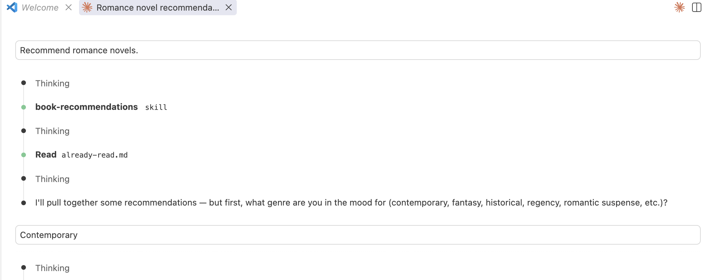
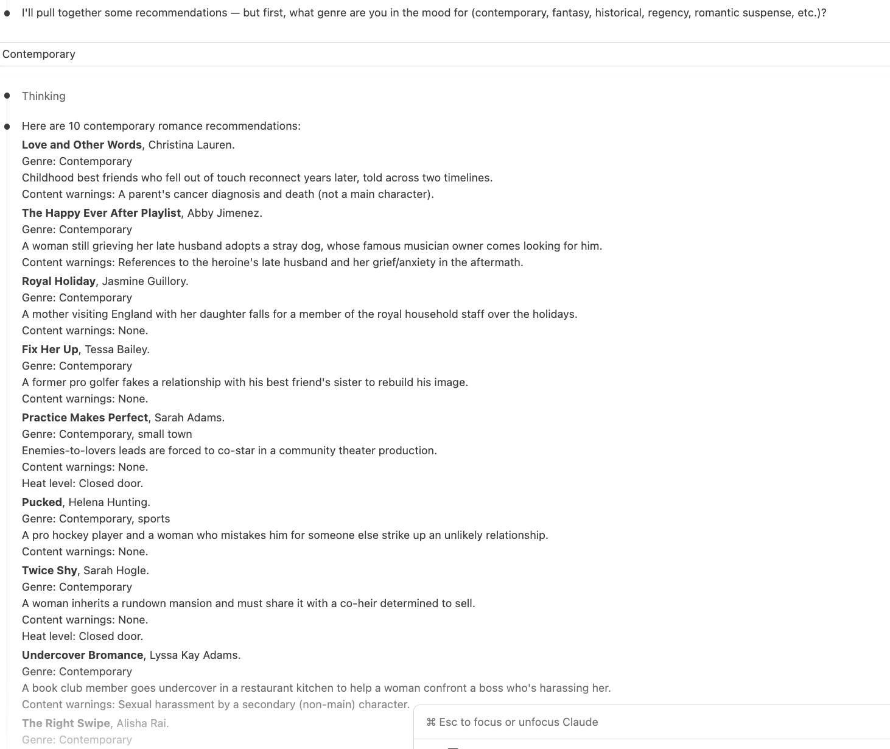
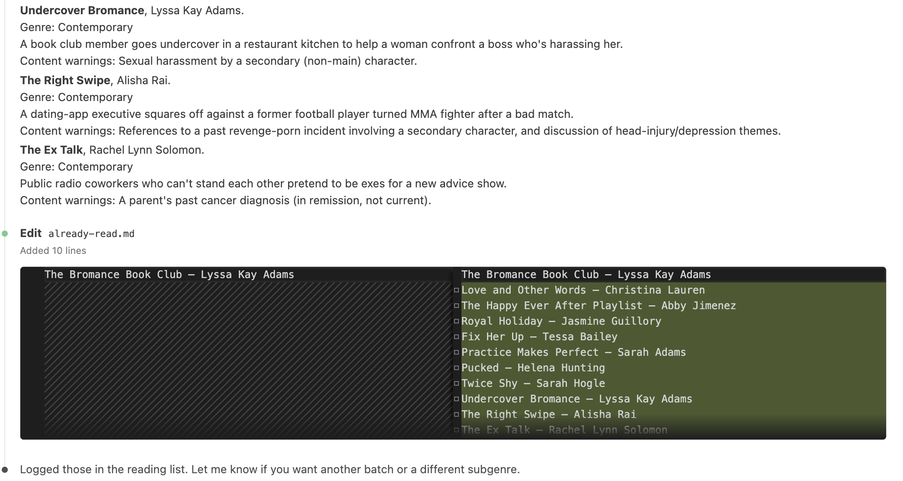

Book Recommendations Skill
This skill recommends romance novels. It filters out particular categories (novellas, mafia/vampire/demon/alien characters, anyone under 18, YA), excludes a list of specific authors I dislike, enforces a strict output format with content warnings, and does not announce what it filtered out.
The Problem
Before I built the skill, Claude was giving me recommendations of authors I disliked, repeating authors in the list, and including books I had read already. Often there were not enough recommendations so I had to keep editing my prompt to Claude.
What I Built
It only gives me recommendations I have not read, in my preferred format, in groups of 15 at a time.
Screenshots
Here is what that looks like:



How I Built It
I created the written skill in VS Code and tested it with Claude Code.
Challenges
In the first round of testing, I had two instruction defects. First, a missing closing "---" that would have broken the file. Second, a sentence that contradicted itself (it said no children but also allowed for children in the epilogue).
In the second round, I had a progressive disclosure issue. The list of books I did not want recommended was huge and would make the skill too long to read easily. I created the already-read.md file so I had a separate place to store past titles.
In the third round, I found a state-persistence limitation in the model. Results still included books I had read that I had not added to already-read.md initially. I edited the skill to add all recommendations to the "do not recommend" list after recommending them.
Future Improvements
I am still considering whether the summary is necessary, and if it should be shortened.